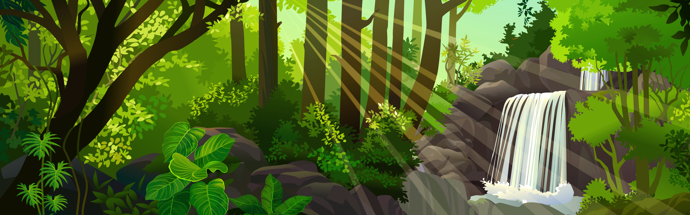

Um dia desses, encontrei uma cachoeira perto do sitio onde moro.fiquei tentado a entrar na agua e me resfrecar naquele calor escaldande
Voce comeca sua jornada no Rio de Janeiro,subindo o Pico da Tijuca ao amanhecer para encontrar a primeira pista.
voce chega no parana e encontra um livro com a historia do pinhao